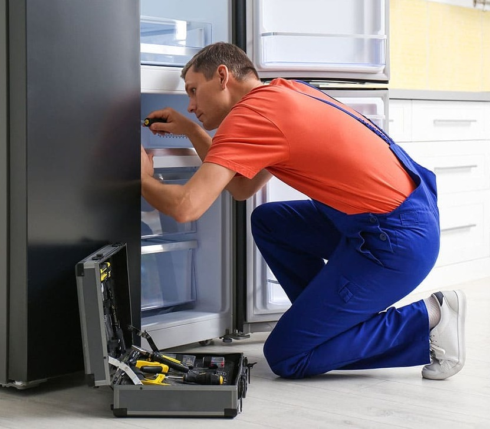
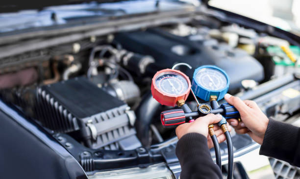
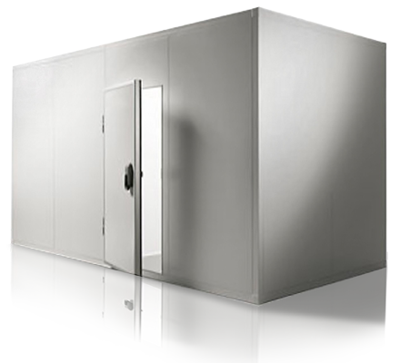

SERVICIOS
Domestica
Comercial
Automotriz
Camaras de frio
INSTALACiÓN
Esto incluye la instalación de sistemas de refrigeración en hogares, comercios e industrias. Puede abarcar desde la instalación de aires acondicionados residenciales hasta sistemas de refrigeración más complejos para supermercados o almacenes.
MANTENIMIENTO
El mantenimiento en sistemas de refrigeración es esencial para garantizar un funcionamiento eficiente , prolongar la vida útil de los equipos, evitar fallas y reducir los costos operativos. Además, contribuye a mantener un ambiente interior saludable y cumplir con las regulaciones vigentes. Se recomienda seguir las recomendaciones del fabricante y contar con el apoyo de profesionales capacitados para realizar el mantenimiento de manera adecuada.
REPARACIÓN
Ofrecemos servicios de reparación de sistemas de refrigeración. Nuestro equipo de profesionales capacitados está preparado para identificar y solucionar problemas en tu sistema de refrigeración, ya sea en tu hogar, negocio u otro entorno. Realizamos reparaciones rápidas y eficientes para garantizar que tu sistema vuelva a funcionar correctamente. Si necesitas ayuda con tu sistema de refrigeración, no dudes en contactarnos y estaremos encantados de brindarte el servicio que necesitas.